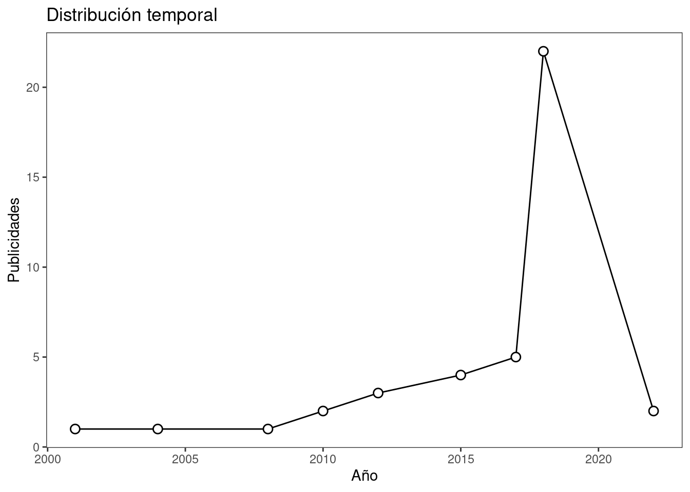
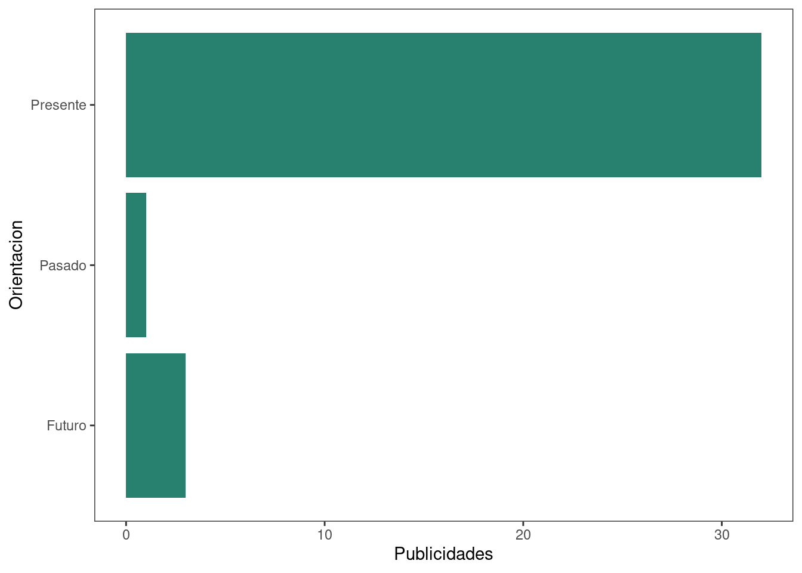
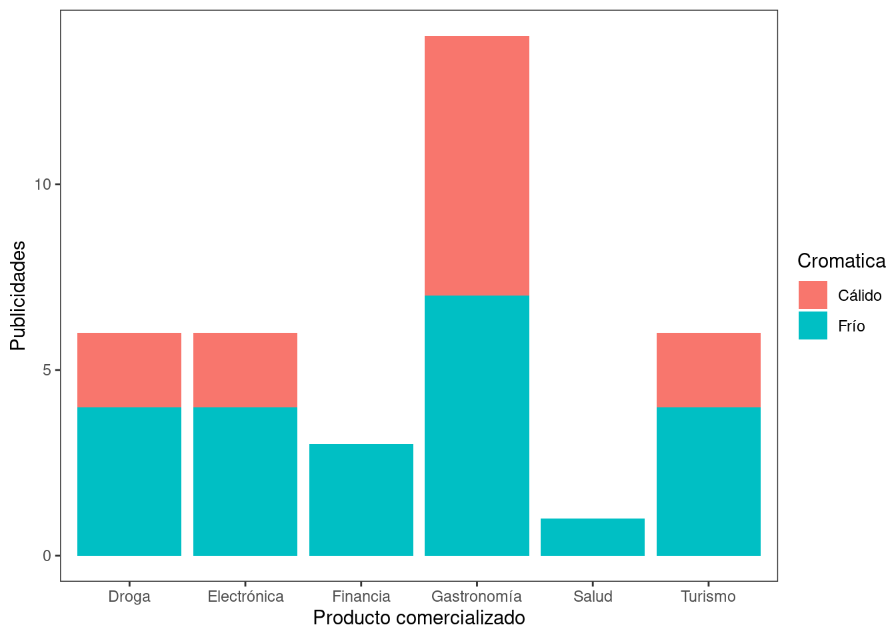
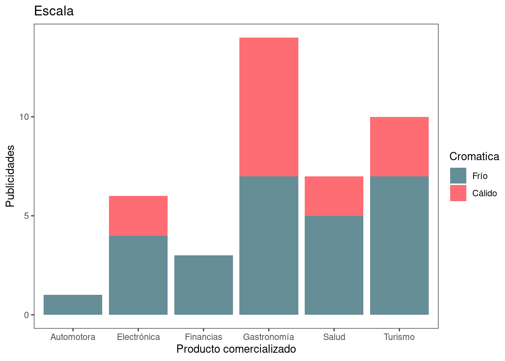
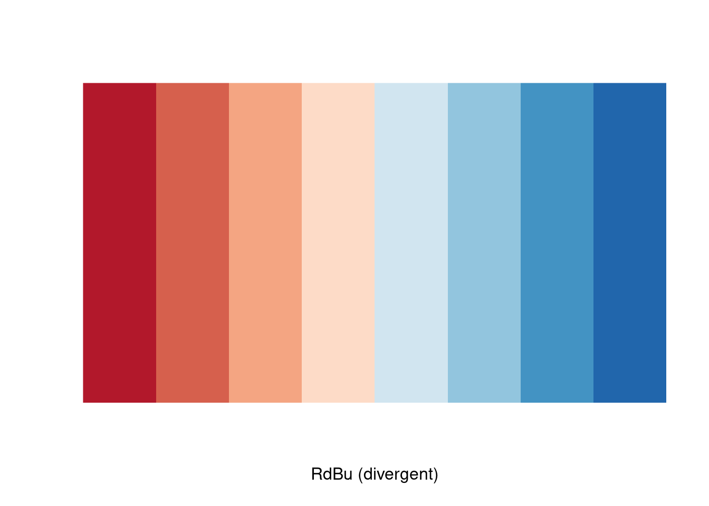

── Attaching packages ─────────────────────────────────────── tidyverse 1.3.2 ──
✔ ggplot2 3.3.6 ✔ purrr 0.3.4
✔ tibble 3.1.8 ✔ dplyr 1.0.10
✔ tidyr 1.2.1 ✔ stringr 1.4.1
✔ readr 2.1.2 ✔ forcats 0.5.2
── Conflicts ────────────────────────────────────────── tidyverse_conflicts() ──
✖ dplyr::filter() masks stats::filter()
✖ dplyr::lag() masks stats::lag()
Attaching package: 'kableExtra'
The following object is masked from 'package:dplyr':
group_rowsTraining and exploration
Acceso a los datos
✔ Reading from "Universo Subte Publicitario: Base de Datos".✔ Range 'Base'.Propósito
Documento que aborda la exploración de los datos sobre el Subte Publicitario en su primera versión: totalidad de publicidades encontradas sin discriminación de línea de subterráneo, año y dispositivo.
| Linea | Marketing | Dispositivo | Periodo | Producto | Tiempo | Orientacion | Cromatica | HEX | Mensaje | Year |
|---|---|---|---|---|---|---|---|---|---|---|
| B | Coca - Cola Company, Coca - Cola | Boca de acceso | 2012 | Gastronomía | [En análisis] | Presente | Cálido | 9e273b | 250ml para seguir. | 2012 |
| B | Telefónica, Movistar | Ploteo de piso | 2012 | Electrónica | [En análisis] | Presente | Frío | 2e629e | Descargá lo que quieras así de rápido. Subte B es Zona 4G de Movistar. | 2012 |
| B | Telefónica, Movistar | Transiluminado | 2012 | Electrónica | [En análisis] | Presente | Frío | 44aec2 | Descargá un capítulo ahora y empezá a verlo dentro del vagón. | 2012 |
| B | Gramon Millet, 102 años plus | Boca de acceso | 2018 | Droga | [En análisis] | Presente | Frío | 282b32 | Energía para encarar tu día. | 2018 |
| B | Roemmers, Sertal | Boca de acceso | 2018 | Droga | [En análisis] | Presente | Frío | 9cafa9 | Para lo que te cae mal, elegí Sertal. Qué felicidad sentirse bien. | 2018 |
| B | Claro, Claro | Boca de acceso | 2018 | Electrónica | [En análisis] | Presente | Cálido | d22f4c | 4G al subte. La velocidad importa. | 2018 |
| B | Disco, Disco Virtual | SubtePass | 2001 | Electrónica | Planeación del tiempo | Presente | Cálido | 211111 | Disco Virtual. Tiempo para vos. Disco SIRVE. | 2001 |
| B | FiberTel | SubtePass | 2004 | Electrónica | Planeación del tiempo | Presente | Frío | 214a70 | Conectate a FiberTel. No des mas vueltas. | 2004 |
| B | William Hope | Transiluminado | 2022 | Salud | Planeación del tiempo | Presente | Frío | d9c196 | Un chequeo de rutina es salud. Vivir tu rutina diaria con una sonrisa, también. | 2022 |
| B | Metrogas | Transiluminado | 2022 | Electrónica | Planeación del tiempo | Presente | Frío | 395d88 | A resolver mis trámites antes que pase el Subte | 2022 |
| B | Destinet | SubtePass | 2008 | Turismo | Tiempo es dinero | Presente | Frío | 9ab0be | Comprá tu paquete por telefóno y escapate de la rutina. | 2008 |
| B | Ripio | Interior de vagón | 2017 | Financia | Tiempo orientado | Presente | Frío | 2a2155 | El futuro es de quien tiene bitcoins. | 2017 |
| B | Bimbo | Interior de vagón | 2017 | Gastronomía | Metáfora ontológica | Presente | Frío | bce4df | Hay un pan que va bien con tus ganas de estar bien. Hoy arranco el gimnasio. | 2017 |
| B | Coca - Cola Company, Coca - Cola | Interior de vagón | 2017 | Gastronomía | Metáforas orientacionales | Pasado | Cálido | a80e21 | Yo ya fui y vine. | 2017 |
| B | Destinet | SubtePass | 2010 | Turismo | Metáfora ontológica | Presente | Frío | 0c5978 | Llevá tu cuerpo a donde está tu mente. | 2010 |
| B | Milka, Chocolate Milka | Indicador de andén | 2018 | Gastronomía | Planeación del tiempo | Futuro | Frío | 6954b0 | Probá llegar a la oficina con algo rico para todos. | 2018 |
| A | Bayer, Actron | Interior de vagón | 2018 | Droga | Planeación del tiempo | Presente | Cálido | b3893f | Más tiempo para ir al after del trabajo. Menos, para un dolor. | 2018 |
| B | Milka, Chocolate Milka | Transiluminado | 2018 | Gastronomía | Planeación del tiempo | Futuro | Frío | 6954b0 | En el próximo viaje, probá compartir el diario con el de al lado. | 2018 |
| B | amBev, Brahma | Interior de vagón | 2018 | Gastronomía | Planeación del tiempo | Presente | Cálido | b90717 | Que te dejen salir antes de que suban. Eso es carnaval. | 2018 |
| B | La Serenísima, Seremix | Transiluminado | 2018 | Gastronomía | [En análisis] | Presente | Cálido | ede018 | Lo pasado licuado, lo nuevo, Seremix. | 2018 |
| A | Chevrolet, Plan Chevrolet | Indicador de andén | 2018 | Financia | [En análisis] | Presente | Frío | 6a646e | ¿Te estás fijando cuánto falta? 3 o 5 cuotas. | 2018 |
| D | Nestlé, Kit Kat | Boca de túnel | 2018 | Gastronomía | [En análisis] | Presente | Cálido | 6d0b08 | Tomate un break del tránsito de la ciudad. | 2018 |
| D | Nestlé, Kit Kat | Transiluminado | 2018 | Gastronomía | [En análisis] | Presente | Cálido | 8c242f | Tomate un break de los bocinazos. | 2018 |
| D | Mondelez, Oreo | Transiluminado | 2018 | Gastronomía | [En análisis] | Presente | Frío | 31d6f6 | Cuando termina el recorrido y alguien sigue dormido. | 2018 |
| B | Emtur, Mar del Plata | Transiluminado | 2018 | Turismo | Planeación del tiempo | Presente | Frío | 7b7789 | El fin de semana que todos queremos. | 2018 |
| B | Atrapalo, Atrapalo | Indicador de andén | 2018 | Turismo | Planeación del tiempo | Presente | Cálido | e75b26 | Atrápalo, tu destino es pasarla bien. | 2018 |
| D | Cervecería y Maltería Quilmes, Quilmes | Transiluminado | 2018 | Gastronomía | [En análisis] | Presente | Frío | 17a5ed | Que no se te escape. | 2018 |
| D | Cervecería y Maltería Quilmes, Quilmes | Transiluminado | 2018 | Gastronomía | [En análisis] | Presente | Frío | 3482c0 | Tipo 21 hs se vacía. | 2018 |
| D | Emtur, Mar del Plata | Transiluminado | 2018 | Turismo | Planeación del tiempo | Presente | Frío | 8091a5 | En Mar del Plata, la ciudad que todos queremos. | 2018 |
| B | Banco Provincia, Banco Provincia | Indicador de andén | 2017 | Financia | [En análisis] | Presente | Frío | 869284 | Pretendé más. | 2017 |
| A | Bayer, Actron | Indicador de andén | 2018 | Droga | [En análisis] | Futuro | Cálido | d1b551 | Más tiempo para el fútbol de los martes. Menos, para un dolor. | 2018 |
| A | Bayer, Actron | Interior de vagón | 2018 | Droga | [En análisis] | Presente | Frío | 15384e | Más tiempo para leer concentrado en el subte. Menos, para un dolor. | 2018 |
| A | Bayer, Actron | Transiluminado | 2018 | Droga | [En análisis] | Presente | Frío | 218d99 | Más tiempo para quedarte mirando vidreras. Menos, para un dolor. | 2018 |
| A | Alfajores Jorgito, Jorgito | Boca de acceso | 2017 | Gastronomía | [En análisis] | Presente | Frío | 94a2a5 | No dejes para mañana el Jorgito que puedes comer hoy. | 2017 |
| D | Arcos Dorados, McDonald's | Escenario Triple | 2018 | Gastronomía | [En análisis] | Presente | Cálido | f9be1f | Comenzá el día bien arriba. | 2018 |
| A | Flybondi, Institucional | Afiche | 2018 | Turismo | Planeación del tiempo | Presente | Cálido | af9644 | Volá a Río de Janeiro. | 2018 |
Análisis exploratorio
Años
Cantidad de publicidades con presencia efectiva en el sistema subterráneo dentro de la base de datos:

| Año | Número observado |
|---|---|
| 2001 | 1 |
| 2004 | 1 |
| 2008 | 1 |
| 2010 | 1 |
| 2012 | 3 |
| 2017 | 5 |
| 2018 | 22 |
| 2022 | 2 |
Es factible observar que la primera etapa de la recolección de publicidades está relacionada con la proximidad temporal, en la cual existe mayor probabilidad de encontrar “buenos datos” en años cercanos al 2022.
Líneas de subterráneo
Distribución de las publicidades en relación a la línea de subterráneo en la cual han manifestado su presencia

Es apreciable la abundancia de material posible de recolectar por sobre la Línea B de Subte.
Orientación temporal
Dados los parámetros arbitrarios de la base de datos, es interés abordar la variable de orientación
[1] "Presente" "Pasado" "Futuro" 
Si bien la cantidad de publicidades en subte es escasa, verifica una hipótesis vista en los antecedentes teóricos de la tesina acerca de la actividad publicitaria occidental:
💡 Existe la tendencia publicitaria a referirse al presente, aunque existen aquellas que refieren al futuro o al pasado.
Cromática y productos
Distribución de escala cromática utilizada por las publicidades en razón de la categoría Productos
subte %>%
group_by(Cromatica, Producto) %>%
tally() %>%
ggplot(aes(x=Producto,y=n,fill=Cromatica))+
geom_col()+
ylab("Publicidades")+
xlab("Producto comercializado")

